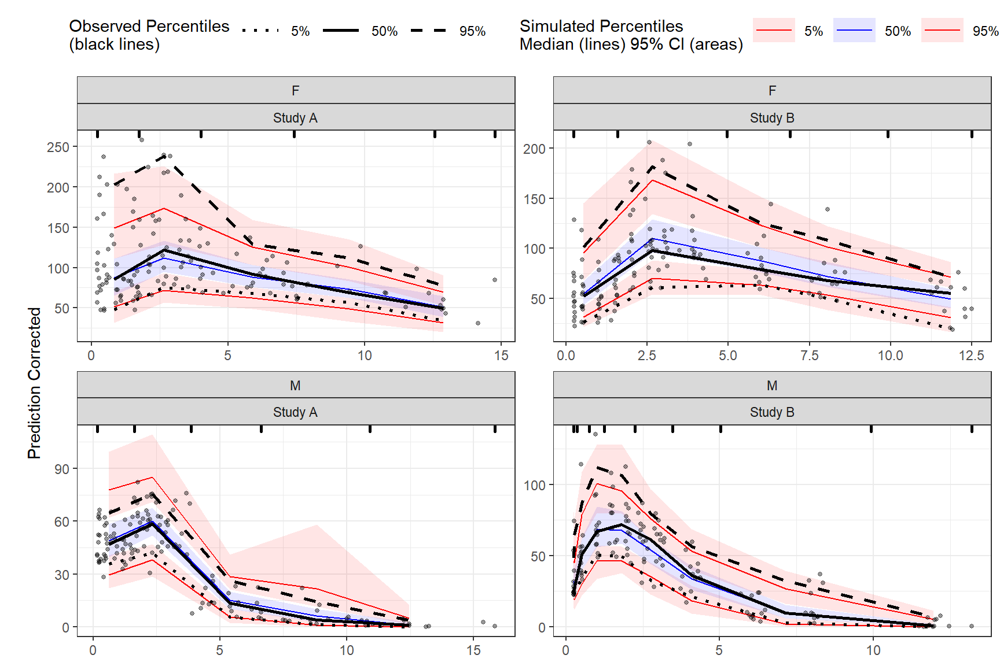
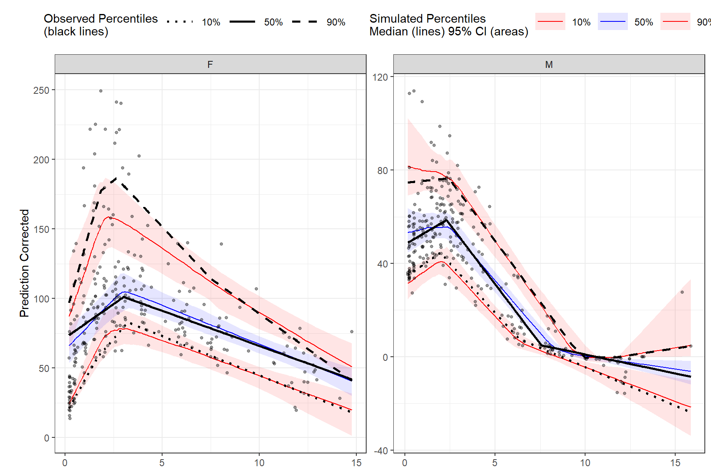
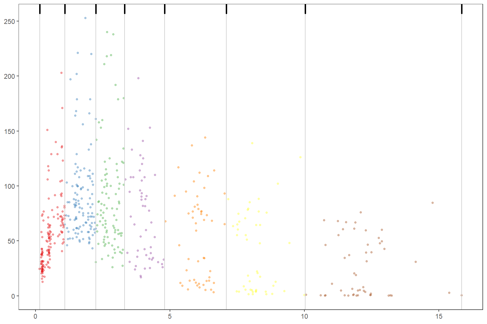

Chapter 4 Advanced
The following chapter provides advanced use cases of the tidyvpc package.
4.1 Binning by Strata
To use different binning methods for different stratification variables, and/or for each level of stratification variable, use multiple calls to the binning() function in combination with the stratum argument. Make sure to set by.strata = T
vpc <- observed(obs_data, x=TIME, y=DV) %>%
simulated(sim_data, y=DV) %>%
stratify(~ GENDER + STUDY) %>%
binning(stratum = list(GENDER = "M", STUDY = "Study A"), bin = "jenks", nbins = 5, by.strata = T) %>%
binning(stratum = list(GENDER = "F", STUDY = "Study A"), bin = "centers", centers = c(0.5,3,5,10,15), by.strata = T) %>%
binning(stratum = list(GENDER = "M", STUDY = "Study B"), bin = "kmeans", by.strata = T) %>%
binning(stratum = list(GENDER = "F", STUDY = "Study B"), bin = "pam", nbins = 5, by.strata = T) %>%
predcorrect(pred=PRED) %>%
vpcstats()
plot(vpc)
4.2 Binless by Strata
To use different smoothing parameters for each level of stratification variable if using the binless() function use a single call of the binless() function and include a data.frame with the column names of stratification variable and corresponding level. To use different span values for each level of stratification variable use a vector the length of n levels of strata. Note: If using more than one stratification variable with the binless() function you must set optimize = TRUE and optimize lambda and span using AIC.
new_lambda = data.frame(GENDER_F = c(2,4,2), GENDER_M = c(1.9,3,2.25) )
vpc <- observed(obs_data, x=TIME, y=DV) %>%
simulated(sim_data, y=DV) %>%
stratify(~ GENDER) %>%
predcorrect(pred=PRED) %>%
binless(qpred = c(0.1, 0.5, 0.9), optimize = FALSE, lambda = new_lambda, loess.ypc = TRUE, span = c(.6, .85)) %>%
vpcstats()
plot(vpc)
4.3 Visualize Bins
If using binning() methods, you can visualize bins by using the plot() function on the tidyvpcobj without calling vpcstats(). Once you are satisifed with the binning method, simply call vpcstats() on the existing tidyvpcobj to compute VPC percentiles and prediction intervals i.e vpc %>% vpcstats()
vpc <- observed(obs_data, x=TIME, y=DV) %>%
simulated(sim_data, y=DV) %>%
binning(bin = "jenks", nbins = 7)
plot(vpc)
4.4 Bin Information
To obtain information about the bins, including the number of observations, xmedian, xmean, xmin, xmax, xmidpoint, xleft, xright, and xcenter, use the bininfo() function from tidyvpc.
vpc <- observed(obs_data, x=TIME, y=DV) %>%
simulated(sim_data, y=DV) %>%
binning(bin = "jenks", nbins = 4) %>%
vpcstats()
bin_information <- bininfo(vpc)
head(bin_information)## bin nobs xmedian xmean xmin xmax xmid
## 1: [0.158,1.89) 213 0.8418133 0.8717959 0.1575342 1.860852 1.009193
## 2: [1.89,4.83) 187 2.8021930 2.9458444 1.8851078 4.772347 3.328727
## 3: [4.83,9.45) 96 6.6279698 6.9869973 4.8283449 9.259398 7.043872
## 4: [9.45,15.8] 54 11.9639045 12.0388598 9.4470340 15.848161 12.647597
## xleft xright xcenter
## 1: 0.1575342 1.872980 1.015257
## 2: 1.8729798 4.800346 3.336663
## 3: 4.8003458 9.353216 7.076781
## 4: 9.3532162 15.848161 12.600688